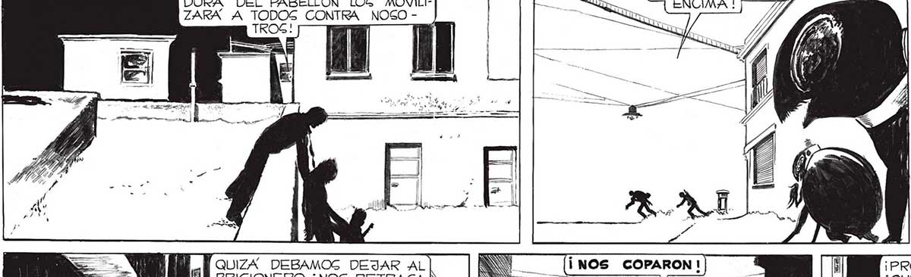
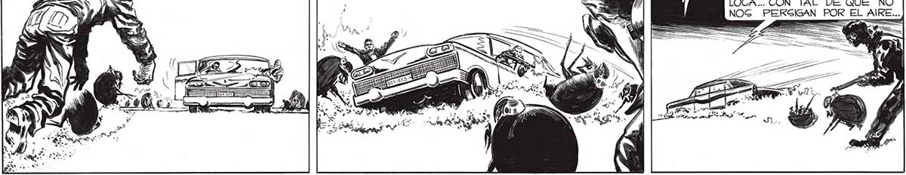

¡APUREMOG ,FRANGO! ¡LA VOLA-| DURA DEL PABELLON LOS MOVILIZARA A TODOS CONTRA NOGOLOS TENEMOS] ENCIMA ! ¡YA LA REACCIÓN DE LOS “MANOS, COMPAÑEROG DEL QUE HABÍAMOS APRESADO FUE MAS INCTANTAÁNEA AÚN DE CUANTO IMAGINÉ : LANZARON EN PERGCECUCION NUESTRA UN FORMIDABLE EJÉRCITO DE “CASCARUDOG” Y HOMBRES-ROBOTS. QUIZA” DEBAMOS DEJAR AL PRIGIONERO. ¡NOS RETRAGA N DEMAGIADO! S ¡PRONTO, TENIENTE,AL AUTO! ¡QUIZA PODAMOG PAGAR ! ¡PASAMOS! HEMOS TENIDO UNA GUERTE LOCA... CON TAL DE QUE NO NOG PERGIGAN POR EL AlKRE... == === == 167

